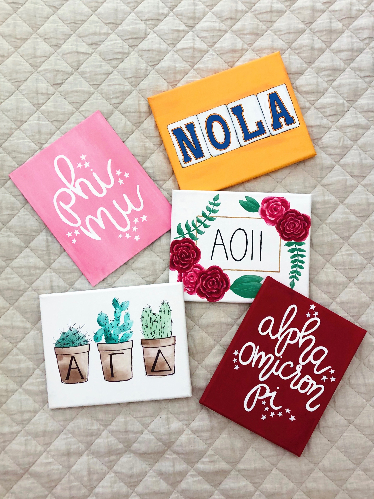
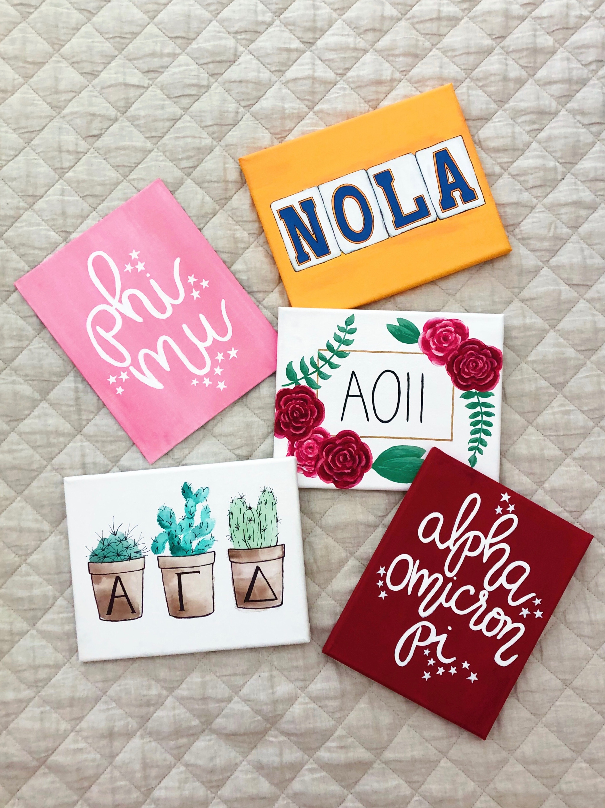
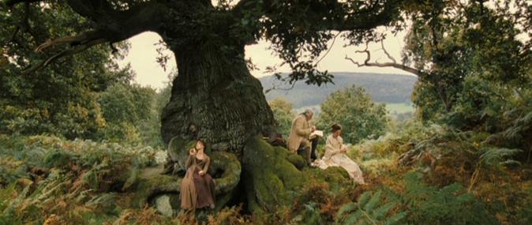
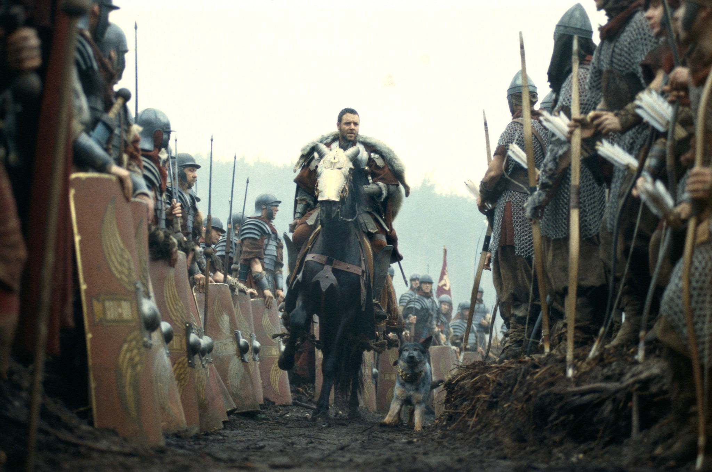
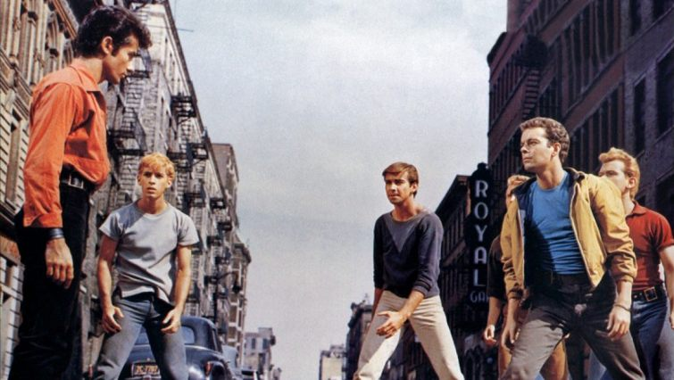

I have always been captivated by the visual aesthetics of the world: the curve of a wave, the figure of a cat, the structure of a cathedral, the patterns of a tapestry. I took several classical art classes throughout middle and high school, in which I got to experiment with pencil, charcoal, acrylic paint, oil paint, and watercolor. Through these experimentations I learned about color theory and other aspects of visual patterns, such as light and shadow behavior and the mathematical patterns behind any art subject.
I have loved putting my artistic ability into practice. I have used it in many school projects. I have countless sketchbooks which are full of my doodles and masterpieces. And, as noted in the Skills section, I even made a business out of it.
I also love examining and analyzing the works of other artists. I am amazed to see the work of graphic artists on animated movies such as How to Train Your Dragon and Avatar (2009). I would love to be a part of such a production one day.


 

My formal introduction to music took place when I began piano lessons in second grade, but my love for music started long before. I was constantly humming and singing around the house, much to the annoyance of my older brothers. There was always a song stuck in my head.
Learning piano gave me my first understanding of music theory and the complex patterns of sound. When I entered high school, I enrolled in a chorus class, not knowing what to expect. The next four years of vocal training taught me more about the beauty and intricacy of music than I could have imagined. I used the knowledge and skills I had learned and auditioned for my church's student ensemble, in which I got to sing more modern music with a smaller group of singers. Through my involvement in both my school and church choir, I got to sing in places such as New York City, Poland (pictured right), Ireland, and Scotland.

Although I am no longer involved in any choral or music group, I still love to listen to music, ranging from film scores to classical pieces to popular music. Oftentimes I will attempt to pick out the melodies and chord progressions on the piano or ukulele.
Music is a language, and it is made up of multitude of different accents, dialects, and expressions. Every harmony, every chord progression, every rhythm, every instrument, works together to create a uniquely beautiful series of sounds, and to convey a unique message to those listening.
I have loved movies since I was about five years old. Growing up with three older brothers meant seeing a lot of action/serious movies. The first one I can remember watching over and over again is Pirates of the Caribbean, and since then my affinity for film has grown extensively. I have developed my own theory about the criteria for a "well-done" movie. It is the gauge by which I subconsciously measure every movie I watch.
Criteria for a Good Movie:
Here's a list of some of my all-time favorite movies.
 My interest in language began in my high school freshman Spanish class. I was so fascinated by the parallels and differences between Spanish and English, that I eventually based my college essay on it three years later. Once in college, I signed up to take a linguistics course, which taught me even more about the underlying patterns of all communication in the world, from the earliest language records to the language of machine learning today. I love to watch informational videos about different languages and their histories, similarities, and characteristics. Fictional languages are especially interesting to me because they developed from the mind of a single or few individuals, instead of evolving over centuries.
Click here to view my presentation on the prevalence of Latin- and Greek-derived words in the English language!
If I could have any superpower, it would be the ability to speak any language in the world, in any accent in the world. Language is such a unique extension of our humanity. It is the engine by which we express ourselves, communicate our ideas, understand each other, and move forward. It is a tool for progress and survival as well as an art of expression and history.